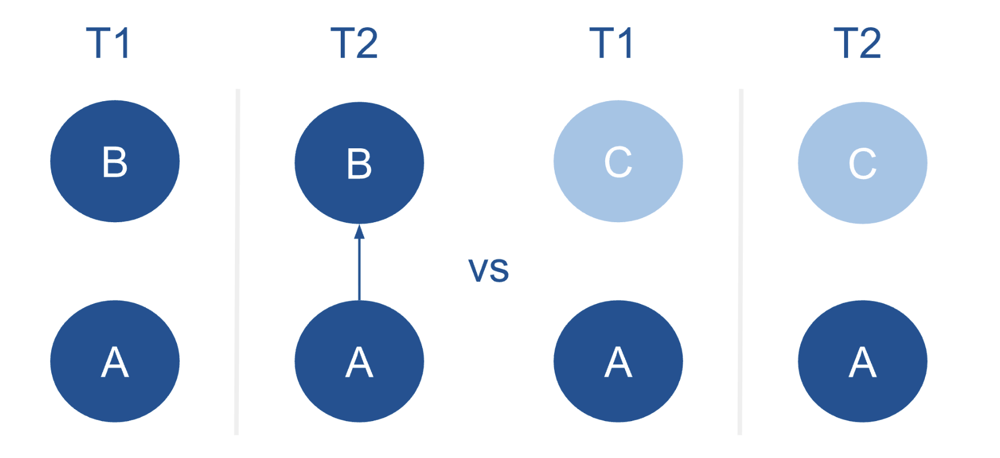
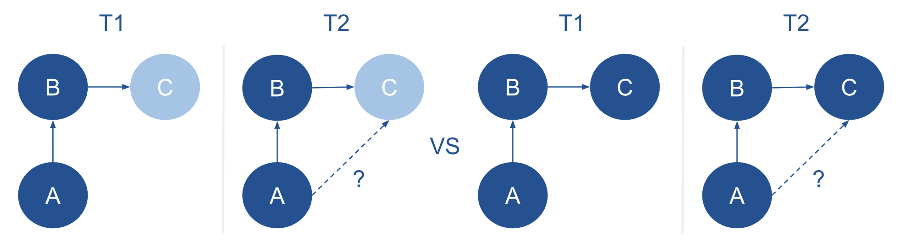

Introduction
Gender segregation persists within academia, reinforcing structural
inequalities by limiting men’s and women’s equal access to influential
networks, mentorship opportunities, and high-status collaborations (Powell 2018). Understanding the causes of this
macro level segregation is crucial to addressing and ultimately
overcoming these disparities.
Coleman argued that to understand the causes of macro-level social
phenomena, we must examine the micro-level mechanisms through which
individual actions and interactions generate large-scale outcomes (Coleman 1990). In this research project, I
apply Social Network Analysis (SNA) to academic collaboration networks,
as it provides a powerful framework for linking micro-level interactions
to macro-level structures (Tolsma and Hofstra
2022). It allows me to examine researchers at the individual
level (nodes), whom they collaborate with (ties), and, at the macro
level, the overall structure of the network. By studying how researchers
form, maintain, or avoid ties, I can trace the micro-level behaviors
that aggregate into macro-level patterns, such as gender segregation
(Tolsma and Hofstra 2022). In this way,
SNA operationalizes Coleman’s insight by linking individual decisions
and interactions to emergent structural outcomes in academic
networks.
A key mechanism behind gender segregation is gender homophily: the
tendency for researchers to preferentially collaborate with colleagues
of the same gender (Wang et al. 2023).
Homophily is a fundamental principle in social network analysis,
influencing the structure and evolution of networks by shaping the
composition of ties between individuals. As Jochem Tolsma discusses in
Social Network Analysis for Social Scientists (Tolsma and Hofstra 2022), selective association
can lead to the formation of tightly-knit clusters with shared
characteristics, such as gender. Over time, these patterns reinforce
existing social divisions, as individuals within a cluster are more
likely to interact with one another than with those outside their group.
This contributes to increased segregation, limiting cross-group
interactions and perpetuating disparities in access to resources,
opportunities, and information.
In academic contexts, homophily shapes co-authorship networks,
fostering gendered clusters that restrict access to mentorship,
resources, and high-impact collaborations, thereby sustaining
inequalities across fields (Wang et al.
2023). Wang’s analysis of the JSTOR corpus shows that this
pattern cannot be fully explained by disciplinary or demographic
factors; even after accounting for these, researchers still
preferentially co-author with same-gender colleagues.
This is all at the dyadic level, focusing on collaborations between
pairs of individuals. For example, if researcher A has the same gender
as resercher B, but reseracher C is a different gender, dyadic homophily
would predict it to be more likely that A sends a tie to B than to
C.

However, researchers may not only be part of a dyadic duo, but
maintain multiple collaborations, forming an egonet: the network of
direct connections surrounding an individual (Tolsma and Hofstra 2022). As a result,
decisions about whom to collaborate with are shaped not only by
individual preferences but also by the broader network of existing ties.
While dyadic homophily influences many collaboration choices, the
structure and composition of a researcher’s egonet can create both
opportunities and constraints for new collaborations.
It can thus be important to look beyond dyadic ties. This research
project therefore extends the literature by examining gendered
collaboration patterns in triadic structures. A triadic structure is a
network configuration involving three nodes (Tolsma and Hofstra 2022); here, I focus on
triads in which researcher A has collaborated with B, and B has
collaborated with C.
In this research project, I specifically investigate whether the
gender of C affects A’s likelihood of collaborating with them,
particularly when A and B share the same gender. Drawing on Contact
Theory (Allport 1954) and Social Identity
Theory (Tajfel and Turner 2004), the
analysis examines how indirect connections through shared collaborators
can either bridge gender boundaries to promote cross-gender ties or
reinforce existing gender segregation in academic networks.

Thus, while researchers may exhibit a micro-level tendency to
collaborate with others of the same gender, these individual preferences
are embedded within a broader network structure that may amplify or
constrain them. To examine how such dynamics unfold, I analyse the
triadic structures described above using social network data on 674
researchers from sociology and politicology departments in Dutch
universities. The dataset consists of two waves: wave one (2015-2018)
and wave two (2019-2023). To assess how gender shapes tie formation and
maintenance within these triadic configurations, I first examine the
prevalence of different triadic structures in the data and then analyse
the gender composition of the two most central to my research (021C and
030T). This leads to the following two descriptive research
questions:
RQ1: How frequently do different types of triadic structures occur
within the network of researchers from sociology and politicology
departments in Dutch Universities?
RQ2: How is gender distributed across the triadic structures,
specifically triads 021C and 030T, within the network of researchers
from sociology and politicology departments in Dutch Universities?
Next, I use the R package RSiena (Ripley et
al. 2011) to examine triadic collaboration patterns.
Specifically, I investigate whether, in a triad of the form A -> B
-> C, the gender of C affects A’s likelihood of forming a
collaboration when A and B share the same gender. This leads to my
explanatory research question:
RQ3: To what extent does the gender of a potential third collaborator
(C) influence triad closure when the initial two collaborators (A and B)
share the same gender?
LS0tCnRpdGxlOiAiSm91cm5hbCAxIgpiaWJsaW9ncmFwaHk6IHJlZmVyZW5jZXMuYmliCmF1dGhvcjogIk15bMOobmUgSHVzc29uIgotLS0KCmBgYHtyLCBnbG9iYWxzZXR0aW5ncywgZWNobz1GQUxTRSwgaW5jbHVkZT1UUlVFLCB3YXJuaW5nPUZBTFNFLCByZXN1bHRzPSdoaWRlJ30KbGlicmFyeShrbml0cikKCmtuaXRyOjpvcHRzX2NodW5rJHNldChlY2hvID0gVFJVRSkKb3B0c19jaHVuayRzZXQodGlkeS5vcHRzPWxpc3Qod2lkdGguY3V0b2ZmPTEwMCksdGlkeT1UUlVFLCB3YXJuaW5nID0gRkFMU0UsIG1lc3NhZ2UgPSBGQUxTRSxjb21tZW50ID0gIiM+IiwgY2FjaGU9VFJVRSwgY2xhc3Muc291cmNlPWMoInRlc3QiKSwgY2xhc3Mub3V0cHV0PWMoInRlc3QyIikpCm9wdGlvbnMod2lkdGggPSAxMDApCiNyZ2w6OnNldHVwS25pdHIoKQoKCgpjb2xvcml6ZSA8LSBmdW5jdGlvbih4LCBjb2xvcikge3NwcmludGYoIjxzcGFuIHN0eWxlPSdjb2xvcjogJXM7Jz4lczwvc3Bhbj4iLCBjb2xvciwgeCkgfQoKYGBgCgpgYGB7ciBrbGlwcHksIGVjaG89RkFMU0UsIGluY2x1ZGU9VFJVRX0Ka2xpcHB5OjprbGlwcHkocG9zaXRpb24gPSBjKCd0b3AnLCAncmlnaHQnKSkKI2tsaXBweTo6a2xpcHB5KGNvbG9yID0gJ2RhcmtyZWQnKQoja2xpcHB5OjprbGlwcHkodG9vbHRpcF9tZXNzYWdlID0gJ0NsaWNrIHRvIGNvcHknLCB0b29sdGlwX3N1Y2Nlc3MgPSAnRG9uZScpCmBgYAoKTGFzdCBjb21waWxlZCBvbiBgciBmb3JtYXQoU3lzLnRpbWUoKSwgJyVCLCAlWScpYAo8YnI+CgotLS0tLS0tLS0tLS0tLS0tLS0tLS0tLS0tLS0tLS0tLS0tLS0tLS0tLS0tLS0tLS0tLS0tLS0tLS0tLS0tLS0tLS0tLS0tLS0KCiMgSW50cm9kdWN0aW9uCkdlbmRlciBzZWdyZWdhdGlvbiBwZXJzaXN0cyB3aXRoaW4gYWNhZGVtaWEsIHJlaW5mb3JjaW5nIHN0cnVjdHVyYWwgaW5lcXVhbGl0aWVzIGJ5IGxpbWl0aW5nIG1lbuKAmXMgYW5kIHdvbWVu4oCZcyBlcXVhbCBhY2Nlc3MgdG8gaW5mbHVlbnRpYWwgbmV0d29ya3MsIG1lbnRvcnNoaXAgb3Bwb3J0dW5pdGllcywgYW5kIGhpZ2gtc3RhdHVzIGNvbGxhYm9yYXRpb25zIFtAcG93ZWxsMjAxOGdlbmRlcl0uIFVuZGVyc3RhbmRpbmcgdGhlIGNhdXNlcyBvZiB0aGlzIG1hY3JvIGxldmVsIHNlZ3JlZ2F0aW9uIGlzIGNydWNpYWwgdG8gYWRkcmVzc2luZyBhbmQgdWx0aW1hdGVseSBvdmVyY29taW5nIHRoZXNlIGRpc3Bhcml0aWVzLgoKQ29sZW1hbiBhcmd1ZWQgdGhhdCB0byB1bmRlcnN0YW5kIHRoZSBjYXVzZXMgb2YgbWFjcm8tbGV2ZWwgc29jaWFsIHBoZW5vbWVuYSwgd2UgbXVzdCBleGFtaW5lIHRoZSBtaWNyby1sZXZlbCBtZWNoYW5pc21zIHRocm91Z2ggd2hpY2ggaW5kaXZpZHVhbCBhY3Rpb25zIGFuZCBpbnRlcmFjdGlvbnMgZ2VuZXJhdGUgbGFyZ2Utc2NhbGUgb3V0Y29tZXMgW0BDb2xlbWFuXS4gSW4gdGhpcyByZXNlYXJjaCBwcm9qZWN0LCBJIGFwcGx5IFNvY2lhbCBOZXR3b3JrIEFuYWx5c2lzIChTTkEpIHRvIGFjYWRlbWljIGNvbGxhYm9yYXRpb24gbmV0d29ya3MsIGFzIGl0IHByb3ZpZGVzIGEgcG93ZXJmdWwgZnJhbWV3b3JrIGZvciBsaW5raW5nIG1pY3JvLWxldmVsIGludGVyYWN0aW9ucyB0byBtYWNyby1sZXZlbCBzdHJ1Y3R1cmVzIFtAU05BU1NdLiBJdCBhbGxvd3MgbWUgdG8gZXhhbWluZSByZXNlYXJjaGVycyBhdCB0aGUgaW5kaXZpZHVhbCBsZXZlbCAobm9kZXMpLCB3aG9tIHRoZXkgY29sbGFib3JhdGUgd2l0aCAodGllcyksIGFuZCwgYXQgdGhlIG1hY3JvIGxldmVsLCB0aGUgb3ZlcmFsbCBzdHJ1Y3R1cmUgb2YgdGhlIG5ldHdvcmsuIEJ5IHN0dWR5aW5nIGhvdyByZXNlYXJjaGVycyBmb3JtLCBtYWludGFpbiwgb3IgYXZvaWQgdGllcywgSSAgY2FuIHRyYWNlIHRoZSBtaWNyby1sZXZlbCBiZWhhdmlvcnMgdGhhdCBhZ2dyZWdhdGUgaW50byBtYWNyby1sZXZlbCBwYXR0ZXJucywgc3VjaCBhcyBnZW5kZXIgc2VncmVnYXRpb24gW0BTTkFTU10uIEluIHRoaXMgd2F5LCBTTkEgb3BlcmF0aW9uYWxpemVzIENvbGVtYW7igJlzIGluc2lnaHQgYnkgbGlua2luZyBpbmRpdmlkdWFsIGRlY2lzaW9ucyBhbmQgaW50ZXJhY3Rpb25zIHRvIGVtZXJnZW50IHN0cnVjdHVyYWwgb3V0Y29tZXMgaW4gYWNhZGVtaWMgbmV0d29ya3MuCgpBIGtleSBtZWNoYW5pc20gYmVoaW5kIGdlbmRlciBzZWdyZWdhdGlvbiBpcyBnZW5kZXIgaG9tb3BoaWx5OiB0aGUgdGVuZGVuY3kgZm9yIHJlc2VhcmNoZXJzIHRvIHByZWZlcmVudGlhbGx5IGNvbGxhYm9yYXRlIHdpdGggY29sbGVhZ3VlcyBvZiB0aGUgc2FtZSBnZW5kZXIgW0B3YW5nMjAyM2hvbW9waGlseV0uIEhvbW9waGlseSBpcyBhIGZ1bmRhbWVudGFsIHByaW5jaXBsZSBpbiBzb2NpYWwgbmV0d29yayBhbmFseXNpcywgaW5mbHVlbmNpbmcgdGhlIHN0cnVjdHVyZSBhbmQgZXZvbHV0aW9uIG9mIG5ldHdvcmtzIGJ5IHNoYXBpbmcgdGhlIGNvbXBvc2l0aW9uIG9mIHRpZXMgYmV0d2VlbiBpbmRpdmlkdWFscy4gQXMgSm9jaGVtIFRvbHNtYSBkaXNjdXNzZXMgaW4gU29jaWFsIE5ldHdvcmsgQW5hbHlzaXMgZm9yIFNvY2lhbCBTY2llbnRpc3RzIFtAU05BU1NdLCBzZWxlY3RpdmUgYXNzb2NpYXRpb24gY2FuIGxlYWQgdG8gdGhlIGZvcm1hdGlvbiBvZiB0aWdodGx5LWtuaXQgY2x1c3RlcnMgd2l0aCBzaGFyZWQgY2hhcmFjdGVyaXN0aWNzLCBzdWNoIGFzIGdlbmRlci4gT3ZlciB0aW1lLCB0aGVzZSBwYXR0ZXJucyByZWluZm9yY2UgZXhpc3Rpbmcgc29jaWFsIGRpdmlzaW9ucywgYXMgaW5kaXZpZHVhbHMgd2l0aGluIGEgY2x1c3RlciBhcmUgbW9yZSBsaWtlbHkgdG8gaW50ZXJhY3Qgd2l0aCBvbmUgYW5vdGhlciB0aGFuIHdpdGggdGhvc2Ugb3V0c2lkZSB0aGVpciBncm91cC4gVGhpcyBjb250cmlidXRlcyB0byBpbmNyZWFzZWQgc2VncmVnYXRpb24sIGxpbWl0aW5nIGNyb3NzLWdyb3VwIGludGVyYWN0aW9ucyBhbmQgcGVycGV0dWF0aW5nIGRpc3Bhcml0aWVzIGluIGFjY2VzcyB0byByZXNvdXJjZXMsIG9wcG9ydHVuaXRpZXMsIGFuZCBpbmZvcm1hdGlvbi4KCkluIGFjYWRlbWljIGNvbnRleHRzLCBob21vcGhpbHkgc2hhcGVzIGNvLWF1dGhvcnNoaXAgbmV0d29ya3MsIGZvc3RlcmluZyBnZW5kZXJlZCBjbHVzdGVycyB0aGF0IHJlc3RyaWN0IGFjY2VzcyB0byBtZW50b3JzaGlwLCByZXNvdXJjZXMsIGFuZCBoaWdoLWltcGFjdCBjb2xsYWJvcmF0aW9ucywgdGhlcmVieSBzdXN0YWluaW5nIGluZXF1YWxpdGllcyBhY3Jvc3MgZmllbGRzIFtAd2FuZzIwMjNob21vcGhpbHldLiBXYW5n4oCZcyBhbmFseXNpcyBvZiB0aGUgSlNUT1IgY29ycHVzIHNob3dzIHRoYXQgdGhpcyBwYXR0ZXJuIGNhbm5vdCBiZSBmdWxseSBleHBsYWluZWQgYnkgZGlzY2lwbGluYXJ5IG9yIGRlbW9ncmFwaGljIGZhY3RvcnM7IGV2ZW4gYWZ0ZXIgYWNjb3VudGluZyBmb3IgdGhlc2UsIHJlc2VhcmNoZXJzIHN0aWxsIHByZWZlcmVudGlhbGx5IGNvLWF1dGhvciB3aXRoIHNhbWUtZ2VuZGVyIGNvbGxlYWd1ZXMuIAoKVGhpcyBpcyBhbGwgYXQgdGhlIGR5YWRpYyBsZXZlbCwgZm9jdXNpbmcgb24gY29sbGFib3JhdGlvbnMgYmV0d2VlbiBwYWlycyBvZiBpbmRpdmlkdWFscy4gRm9yIGV4YW1wbGUsIGlmIHJlc2VhcmNoZXIgQSBoYXMgdGhlIHNhbWUgZ2VuZGVyIGFzIHJlc2VyY2hlciBCLCBidXQgcmVzZXJhY2hlciBDIGlzIGEgZGlmZmVyZW50IGdlbmRlciwgZHlhZGljIGhvbW9waGlseSB3b3VsZCBwcmVkaWN0IGl0IHRvIGJlIG1vcmUgbGlrZWx5IHRoYXQgQSBzZW5kcyBhIHRpZSB0byBCIHRoYW4gdG8gQy4KCiFbXShpbWFnZXMvZGlhZGljMy5wbmcpCgpIb3dldmVyLCByZXNlYXJjaGVycyBtYXkgbm90IG9ubHkgYmUgcGFydCBvZiBhIGR5YWRpYyBkdW8sIGJ1dCBtYWludGFpbiBtdWx0aXBsZSBjb2xsYWJvcmF0aW9ucywgZm9ybWluZyBhbiBlZ29uZXQ6IHRoZSBuZXR3b3JrIG9mIGRpcmVjdCBjb25uZWN0aW9ucyBzdXJyb3VuZGluZyBhbiBpbmRpdmlkdWFsIFtAU05BU1NdLiBBcyBhIHJlc3VsdCwgZGVjaXNpb25zIGFib3V0IHdob20gdG8gY29sbGFib3JhdGUgd2l0aCBhcmUgc2hhcGVkIG5vdCBvbmx5IGJ5IGluZGl2aWR1YWwgcHJlZmVyZW5jZXMgYnV0IGFsc28gYnkgdGhlIGJyb2FkZXIgbmV0d29yayBvZiBleGlzdGluZyB0aWVzLiBXaGlsZSBkeWFkaWMgaG9tb3BoaWx5IGluZmx1ZW5jZXMgbWFueSBjb2xsYWJvcmF0aW9uIGNob2ljZXMsIHRoZSBzdHJ1Y3R1cmUgYW5kIGNvbXBvc2l0aW9uIG9mIGEgcmVzZWFyY2hlcuKAmXMgZWdvbmV0IGNhbiBjcmVhdGUgYm90aCBvcHBvcnR1bml0aWVzIGFuZCBjb25zdHJhaW50cyBmb3IgbmV3IGNvbGxhYm9yYXRpb25zLgoKSXQgY2FuIHRodXMgYmUgaW1wb3J0YW50IHRvIGxvb2sgYmV5b25kIGR5YWRpYyB0aWVzLiBUaGlzIHJlc2VhcmNoIHByb2plY3QgdGhlcmVmb3JlIGV4dGVuZHMgdGhlIGxpdGVyYXR1cmUgYnkgZXhhbWluaW5nIGdlbmRlcmVkIGNvbGxhYm9yYXRpb24gcGF0dGVybnMgaW4gdHJpYWRpYyBzdHJ1Y3R1cmVzLiBBIHRyaWFkaWMgc3RydWN0dXJlIGlzIGEgbmV0d29yayBjb25maWd1cmF0aW9uIGludm9sdmluZyB0aHJlZSBub2RlcyBbQFNOQVNTXTsgaGVyZSwgSSBmb2N1cyBvbiB0cmlhZHMgaW4gd2hpY2ggcmVzZWFyY2hlciBBIGhhcyBjb2xsYWJvcmF0ZWQgd2l0aCBCLCBhbmQgQiBoYXMgY29sbGFib3JhdGVkIHdpdGggQy4gCgpJbiB0aGlzIHJlc2VhcmNoIHByb2plY3QsIEkgc3BlY2lmaWNhbGx5IGludmVzdGlnYXRlIHdoZXRoZXIgdGhlIGdlbmRlciBvZiBDIGFmZmVjdHMgQeKAmXMgbGlrZWxpaG9vZCBvZiBjb2xsYWJvcmF0aW5nIHdpdGggdGhlbSwgcGFydGljdWxhcmx5IHdoZW4gQSBhbmQgQiBzaGFyZSB0aGUgc2FtZSBnZW5kZXIuIERyYXdpbmcgb24gQ29udGFjdCBUaGVvcnkgW0BBbGxwb3J0XSBhbmQgU29jaWFsIElkZW50aXR5IFRoZW9yeSBbQFRhamZlbF9UdXJuZXJdLCB0aGUgYW5hbHlzaXMgZXhhbWluZXMgaG93IGluZGlyZWN0IGNvbm5lY3Rpb25zIHRocm91Z2ggc2hhcmVkIGNvbGxhYm9yYXRvcnMgY2FuIGVpdGhlciBicmlkZ2UgZ2VuZGVyIGJvdW5kYXJpZXMgdG8gcHJvbW90ZSBjcm9zcy1nZW5kZXIgdGllcyBvciByZWluZm9yY2UgZXhpc3RpbmcgZ2VuZGVyIHNlZ3JlZ2F0aW9uIGluIGFjYWRlbWljIG5ldHdvcmtzLgoKIVtdKGltYWdlcy90cmlhZGljNC5wbmcpCgoKVGh1cywgd2hpbGUgcmVzZWFyY2hlcnMgbWF5IGV4aGliaXQgYSBtaWNyby1sZXZlbCB0ZW5kZW5jeSB0byBjb2xsYWJvcmF0ZSB3aXRoIG90aGVycyBvZiB0aGUgc2FtZSBnZW5kZXIsIHRoZXNlIGluZGl2aWR1YWwgcHJlZmVyZW5jZXMgYXJlIGVtYmVkZGVkIHdpdGhpbiBhIGJyb2FkZXIgbmV0d29yayBzdHJ1Y3R1cmUgdGhhdCBtYXkgYW1wbGlmeSBvciBjb25zdHJhaW4gdGhlbS4gVG8gZXhhbWluZSBob3cgc3VjaCBkeW5hbWljcyB1bmZvbGQsIEkgYW5hbHlzZSB0aGUgdHJpYWRpYyBzdHJ1Y3R1cmVzIGRlc2NyaWJlZCBhYm92ZSB1c2luZyBzb2NpYWwgbmV0d29yayBkYXRhIG9uIDY3NCByZXNlYXJjaGVycyBmcm9tIHNvY2lvbG9neSBhbmQgcG9saXRpY29sb2d5IGRlcGFydG1lbnRzIGluIER1dGNoIHVuaXZlcnNpdGllcy4gVGhlIGRhdGFzZXQgY29uc2lzdHMgb2YgdHdvIHdhdmVzOiB3YXZlIG9uZSAgKDIwMTUtMjAxOCkgYW5kIHdhdmUgdHdvICgyMDE5LTIwMjMpLiBUbyBhc3Nlc3MgaG93IGdlbmRlciBzaGFwZXMgdGllIGZvcm1hdGlvbiBhbmQgbWFpbnRlbmFuY2Ugd2l0aGluIHRoZXNlIHRyaWFkaWMgY29uZmlndXJhdGlvbnMsIEkgZmlyc3QgZXhhbWluZSB0aGUgcHJldmFsZW5jZSBvZiBkaWZmZXJlbnQgdHJpYWRpYyBzdHJ1Y3R1cmVzIGluIHRoZSBkYXRhIGFuZCB0aGVuIGFuYWx5c2UgdGhlIGdlbmRlciBjb21wb3NpdGlvbiBvZiB0aGUgdHdvIG1vc3QgY2VudHJhbCB0byBteSByZXNlYXJjaCAoMDIxQyBhbmQgMDMwVCkuIFRoaXMgbGVhZHMgdG8gdGhlIGZvbGxvd2luZyB0d28gZGVzY3JpcHRpdmUgcmVzZWFyY2ggcXVlc3Rpb25zOgoKUlExOiBIb3cgZnJlcXVlbnRseSBkbyBkaWZmZXJlbnQgdHlwZXMgb2YgdHJpYWRpYyBzdHJ1Y3R1cmVzIG9jY3VyIHdpdGhpbiB0aGUgbmV0d29yayBvZiByZXNlYXJjaGVycyBmcm9tIHNvY2lvbG9neSBhbmQgcG9saXRpY29sb2d5IGRlcGFydG1lbnRzIGluIER1dGNoIFVuaXZlcnNpdGllcz8KClJRMjogSG93IGlzIGdlbmRlciBkaXN0cmlidXRlZCBhY3Jvc3MgdGhlIHRyaWFkaWMgc3RydWN0dXJlcywgc3BlY2lmaWNhbGx5IHRyaWFkcyAwMjFDIGFuZCAwMzBULCB3aXRoaW4gdGhlIG5ldHdvcmsgb2YgcmVzZWFyY2hlcnMgZnJvbSBzb2Npb2xvZ3kgYW5kIHBvbGl0aWNvbG9neSBkZXBhcnRtZW50cyBpbiBEdXRjaCBVbml2ZXJzaXRpZXM/CgpOZXh0LCBJIHVzZSB0aGUgUiBwYWNrYWdlIFJTaWVuYSBbQFJzaWVuYV0gdG8gZXhhbWluZSB0cmlhZGljIGNvbGxhYm9yYXRpb24gcGF0dGVybnMuIFNwZWNpZmljYWxseSwgSSBpbnZlc3RpZ2F0ZSB3aGV0aGVyLCBpbiBhIHRyaWFkIG9mIHRoZSBmb3JtIEEgLT4gQiAtPiBDLCB0aGUgZ2VuZGVyIG9mIEMgYWZmZWN0cyBB4oCZcyBsaWtlbGlob29kIG9mIGZvcm1pbmcgYSBjb2xsYWJvcmF0aW9uIHdoZW4gQSBhbmQgQiBzaGFyZSB0aGUgc2FtZSBnZW5kZXIuIFRoaXMgbGVhZHMgdG8gbXkgZXhwbGFuYXRvcnkgcmVzZWFyY2ggcXVlc3Rpb246CgpSUTM6IFRvIHdoYXQgZXh0ZW50IGRvZXMgdGhlIGdlbmRlciBvZiBhIHBvdGVudGlhbCB0aGlyZCBjb2xsYWJvcmF0b3IgKEMpIGluZmx1ZW5jZSB0cmlhZCBjbG9zdXJlIHdoZW4gdGhlIGluaXRpYWwgdHdvIGNvbGxhYm9yYXRvcnMgKEEgYW5kIEIpIHNoYXJlIHRoZSBzYW1lIGdlbmRlcj8KCgo8YnI+CgojIFJlZmVyZW5jZXMKCg==